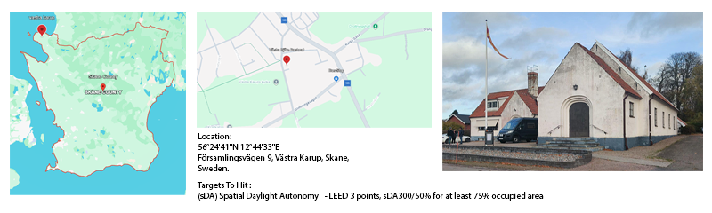
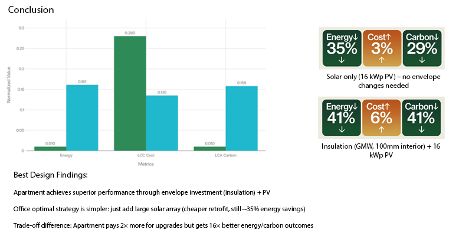

MULTI-OBJECTIVE RETROFIT
There's rarely one renovation that's simultaneously the cheapest, greenest and most energy-efficient — so instead of picking a single "best" retrofit, this project mapped out all the trade-offs at once. Västra Bjäre Pastorat, a community centre and parish office in Västra Karup, Skåne, was modelled in Rhino and Grasshopper, then run through a parametric workflow testing passive measures (insulation, windows), active measures (rooftop PV), and a behavioural scenario converting part of the office into residential apartments.
Every combination was scored on three axes — annual energy demand, 50-year Life Cycle Cost, and Life Cycle Assessment carbon impact — and a Pareto front analysis found the renovation sets that balance all three best, rather than optimising any single one in isolation.

SITE INTRODUCTION

RESEARCH & STRATEGIES
BASELINE & METHODOLOGY
The existing two-storey building, plus basement and attic, has a heated floor area of roughly 576.2 m². Measured energy bills put its Energy Use Intensity at 57.1 kWh/m²·year; the calibrated Grasshopper model came out at 54.50 kWh/m²·year — close enough to serve as the benchmark every renovation measure was tested against. Heating runs entirely on electricity via a heat pump, with no district heating connection and no central ventilation, just individual exhaust fans per zone.
RENOVATION STRATEGIES
Three families of measures were tested. Passive: glass mineral wool versus hemp fibre insulation, 100–300 mm thick, on interior or exterior wall faces, plus a choice of existing, double- or triple-glazed windows. Active: rooftop photovoltaic arrays in three configurations — 5.8 kWp above the attic, 11.0 kWp above the main hall, or 16.9 kWp combining both. Behavioural: converting 208.5 m² of existing office space into residential apartments — a double-bedroom unit on the first floor, two one-bedroom units on the second — evaluated with ClimateStudio's default residential occupancy profiles in place of office schedules.
INDIVIDUAL PARAMETER RESULTS
Tested one at a time, the largest PV array (16.9 kWp) delivers the lowest annual energy demand of any single measure, while — unsurprisingly — the base case with no interventions at all has the lowest life cycle cost. Every passive measure sits somewhere in between on both axes, none matching what active generation alone achieves for energy.
Looked at as embodied carbon alone, 300 mm of hemp insulation on the interior side wins outright — it's a biogenic material with a small enough footprint to undercut everything else. But once operational energy is folded back in, that ranking flips: the 16.9 kWp PV system cuts total life cycle emissions by roughly 35% versus the base case, more than any passive measure manages on its own, even though hemp remains the better choice product-for-product.
TRADE-OFF ANALYSIS
Of the 324 parametric combinations simulated, 61 optimised sets were analysed for the existing office function and 32 for the proposed apartment function. Across every pairwise trade-off tested, energy demand and embodied carbon moved together directly — a design that saves energy also tends to cut LCA impact, which isn't guaranteed in retrofit work and made the three-way optimisation that followed more tractable than it might otherwise have been.
OPTIMAL RENOVATION PATHWAYS
Combining all three criteria with equal weighting, the office function converges on a clear answer: maximum PV (16.9 kWp), existing windows, no added insulation — 35% energy savings for just 3% extra cost, with envelope upgrades adding cost and embodied carbon without meaningfully improving comfort, since internal heat gains from people, lighting and equipment dominate its demand anyway. The apartment function tells a different story: it benefits from pairing 100 mm interior glass mineral wool with the same 16.9 kWp PV system, reaching 41% energy savings for 6% extra cost, because residential heating demand responds to insulation in a way office internal gains don't.
TAKEAWAYS
- No universal retrofit solution. The office and apartment functions in the very same building arrive at different optimal strategies, because their primary energy balance drivers (internal gains vs. heating demand) differ fundamentally.
- Active generation outpaces envelope upgrades. Both functions converge on the 16.9 kWp PV array, confirming that on-site solar generation consistently provides stronger returns than deep fabric intervention for this context.
- Whole-system impact reverses material ranking. While 300 mm hemp insulation has the lowest standalone embodied carbon, the PV system avoids far more total life cycle emissions once operational displacement is factored in.
- Diminishing returns on deep fabric interventions. Adding insulation beyond 200 mm and specifying premium glazing steeply increases cost and embodied carbon with negligible extra energy reductions.
- Energy and LCA carbon align closely. Because operational energy reductions directly lowered lifecycle carbon across all iterations, the core design optimization resolved between cost versus environmental performance.
